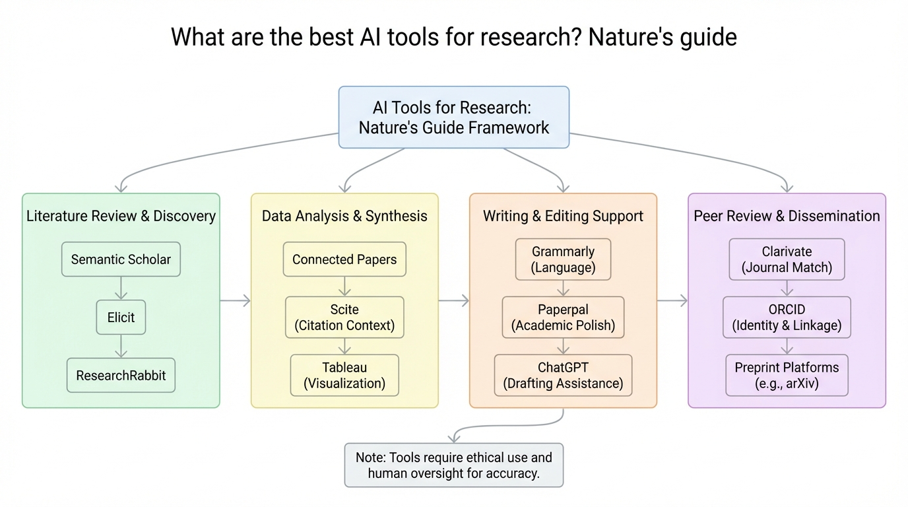

Figure 1
연구자들이 활용할 수 있는 주요 AI 대규모 언어 모델(LLM)들을 용도별로 비교 정리한 Nature의 가이드 기사이다. OpenAI의 o3-mini(추론 특화), DeepSeek-R1(범용/오픈웨이트), Meta의 Llama(커스터마이징 워크호스), Anthropic의 Claude 3.5 Sonnet(코딩 특화), Allen Institute의 OLMo 2(완전 오픈소스) 등 5개 LLM을 연구자 인터뷰 기반으로 소개하며, 각 모델의 장단점과 적합한 연구 활용 시나리오를 제시한다.
거의 매주 새로운 AI 도구가 출시되고 있으며, 연구자들은 원고 편집, 코드 작성, 가설 생성 등 다양한 목적으로 생성형 AI를 활용하고자 한다. 그러나 각 LLM의 특성과 적합한 용도가 다르기 때문에, 어떤 모델을 어떤 작업에 사용해야 하는지에 대한 실용적 가이드가 필요하다. 특히 2024~2025년 reasoning model의 등장과 DeepSeek의 오픈웨이트 모델 공개로 AI 도구 생태계가 급변하고 있어, 연구 커뮤니티를 위한 최신 비교 정보의 수요가 높아졌다.
기사는 5가지 주요 LLM을 연구 활용 관점에서 체계적으로 분류하였다:
| 모델 | 별칭 | 주요 강점 | 주요 약점 |
|---|---|---|---|
| **o3-mini** (OpenAI) | The Reasoner | 수학/과학 추론, 코딩, 데이터 정리; 'deep research' 기능으로 문헌 리뷰 가능 | 유료 API 필요; 수학자 수준에는 미달 |
| **DeepSeek-R1** | The All-rounder | o1급 성능을 저비용 API로 제공; 오픈웨이트; 사고과정 공개로 가설 생성에 유리 | 긴 사고 과정으로 느림; 데이터 보안 우려; 안전장치 부족; 지적재산권 논란 |
| **Llama** (Meta) | The Workhorse | 6억 회 이상 다운로드; 결정 구조 예측, 양자 컴퓨터 시뮬레이션 등 커스텀 모델 구축에 활용 | 접근 허가 요청 필요; OLMo, Qwen 등 대안 부상 |
| **Claude 3.5 Sonnet** (Anthropic) | The Coder | 코딩 벤치마크 우수; 시각 정보 해석; 기술 용어 보존하며 문장 다듬기 | 유료 API 필요; 오픈소스 모델 대비 비용 |
| **OLMo 2** (Allen AI) | The Really Open One | 훈련 데이터+코드 완전 공개; 편향 추적, 효율성 개선 연구에 적합 | 실행에 전문 지식 필요 (진입 장벽 낮아지는 중) |
Nature 기자가 다수의 연구자 및 전문가(Andrew White/FutureHouse, Simon Frieder/Oxford, Benyou Wang/CUHK-Shenzhen, Carrie Wright & Elizabeth Humphries/Fred Hutch, Tianlong Chen/UNC, Huan Sun/Ohio State, Lewis Tunstall/Hugging Face, Ana Catarina De Alencar/EIT Manufacturing)를 인터뷰하여, 각자의 경험과 선호도를 기반으로 모델별 장단점을 정리하였다. 벤치마크 결과, 실제 연구 활용 사례, 법적 이슈 등 다각적 관점을 반영하였다.
학술 논문이 아닌 Nature News 기사이므로 새로운 연구 결과를 제시하지는 않는다. 그러나 2025년 초 시점에서 급변하는 AI 도구 생태계를 연구자 관점에서 체계적으로 정리한 점에 실용적 가치가 있다. 특히 reasoning model(o3-mini, DeepSeek-R1)의 등장이 연구 도구로서의 LLM 활용 패러다임을 어떻게 바꾸고 있는지를 포착하였으며, 오픈웨이트/오픈소스 모델의 중요성과 지적재산권 문제를 함께 다루어 균형 잡힌 시각을 제공한다.